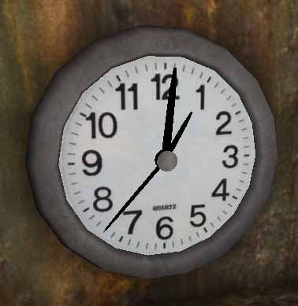

Tamearia Real Time Clock
This is a real time clock that I created. With some minor changes it can probably be used in a normal UT2004 map, although I haven't tested it online.
First up is the clock itself:
class Clock extends Actor placeable; var ClockHand HourHand, MinuteHand, SecondHand; var() vector HourHandScale, MinuteHandScale, SecondHandScale; // Since the hands are spawned by the clock, var() texture HourHandTexture, MinuteHandTexture, SecondHandTexture; // need a way for the mapper to customize the hands. var rotator Hour, Minute, Second; simulated function PostBeginPlay() { local vector NewDrawScale3D, MyDrawScale; super.PostBeginPlay(); HourHand = spawn(class'ClockHand', self,,Location,Rotation); MinuteHand = spawn(class'ClockHand', self,,Location,Rotation); SecondHand = spawn(class'ClockHand', self,,Location,Rotation); MyDrawScale.X = DrawScale * DrawScale3D.X; MyDrawScale.Y = DrawScale * DrawScale3D.Y; MyDrawScale.Z = DrawScale * DrawScale3D.Z; NewDrawScale3D = HourHandScale*MyDrawScale; // Scale the hands according to my scale. HourHand.SetDrawScale3D(NewDrawScale3D); NewDrawScale3D = MinuteHandScale*MyDrawScale; MinuteHand.SetDrawScale3D(NewDrawScale3D); NewDrawScale3D = SecondHandScale*MyDrawScale; SecondHand.SetDrawScale3D(NewDrawScale3D); HourHand.Skins[0] = HourHandTexture; MinuteHand.Skins[0] = MinuteHandTexture; SecondHand.Skins[0] = SecondHandTexture; Hour.Yaw = Rotation.Yaw; // If I'm rotated, turn the hands to my rotation. Minute.Yaw = Rotation.Yaw; Second.Yaw = Rotation.Yaw; Hour.Pitch = -5461.333333 * Level.Hour; // Set the hands to their starting point (current time). Minute.Pitch = -1092.266667 * Level.Minute; Second.Pitch = -1092.266667 * Level.Second; HourHand.SetRotation(Hour); MinuteHand.SetRotation(Minute); SecondHand.SetRotation(Second); SetTimer(0.1,true); // Setting it to one second makes the hands act screwy, so set it to less than a second. } function Timer() { local rotator Hour, Minute, Second; Hour.Pitch = -5461.333333 * (Level.Hour + (Level.Minute/60)); // Smooth rotation for the hour hand Minute.Pitch = -1092.266667 * Level.Minute; Second.Pitch = -1092.266667 * int(Level.Second + 0.1); HourHand.SetRotation(Hour); MinuteHand.SetRotation(Minute); SecondHand.SetRotation(Second); } defaultproperties { HourHandScale=(X=0.60,Y=1.00,Z=0.60), MinuteHandScale=(X=1.00,Y=1.00,Z=1.00), SecondHandScale=(X=0.40,Y=1.00,Z=1.00), HourHandTexture=Texture'UCGeneric.SolidColours.Black' MinuteHandTexture=Texture'UCGeneric.SolidColours.Black' SecondHandTexture=Texture'UCGeneric.SolidColours.Black' DrawType=DT_StaticMesh StaticMesh=StaticMesh'TameariaMeshes.TheClock' bShadowCast=True bEdShouldSnap=True }
The actual clock hands just have default properties.
class ClockHand extends Actor; defaultproperties { DrawType=DT_StaticMesh StaticMesh=StaticMesh'TameariaMeshes.TheClockHand' }
The clock mesh has the center of the clock at (0,0,0), and the clock hands are pointing straight up from (0,0,0) to make the code easier.
